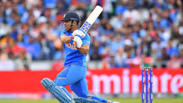

 Mahendra Singh Dhoni, fondly known as "Captain Cool," is one of the most iconic figures in Indian cricket history. Born in Ranchi, Jharkhand, Dhoni rose from humble beginnings to become a legendary wicketkeeper-batsman and one of the most successful captains of the Indian national team. Renowned for his calm demeanor and sharp cricketing mind, Dhoni led India to numerous victories, including the 2007 ICC T20 World Cup, the 2011 ICC Cricket World Cup, and the 2013 Champions Trophy. His leadership transformed Indian cricket, fostering a fearless and strategic approach to the game. Dhoni's finishing skills, lightning-fast stumpings, and ability to handle pressure made him a fan favorite and a role model for aspiring cricketers.